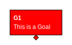

Stylesheets for SVG rendering
You can provide (multiple) custom CSS stylesheets for SVG via the -s or --stylesheet options.
The path may be relative to the current working directory, absolute, or an URL (e.g. starting with http or https).
If a relative path is used, it will be translated to an absolute path, since the CSS stylesheet is not copied into the output path. Thus, if you have a complex folder structure, it is encouraged to either use a central CSS stylesheet that is provided via, e.g., http, or embed the stylesheets into the generated SVGs using the -t option.
Every element will also be addressable by id. The id is the same as the YAML id.
This table shows the CSS classes assigned to a certain element:
| Class | Assigned to | SVG Element |
|---|---|---|
| gsndiagram | The complete diagram | svg |
| gsnelem | All elements | g |
| gsngoal | Goal | g |
| gsn_undeveloped | Undeveloped | g |
| gsnsltn | Solution | g |
| gsnawaysltn | Away Solution | g |
| gsnstgy | Strategy | g |
| gsnasmp | Assumption | g |
| gsnawayasmp | Away Assumption | g |
| gsnjust | Justification | g |
| gsnawayjust | Away Justification | g |
| gsnctxt | Context | g |
| gsnawayctxt | Away Context | g |
| gsnmodule | Module | g |
gsn_module_module | Module name | g |
| gsnedge | All edges | path |
gsnlay_<layer> | Layer <layer> | path |
| gsninctxt | In Context Of | path |
| gsnspby | Supported By | path |
| gsncomposite | Composite (In Context Of AND Supported By) | path |
You can assign additional classes by adding the classes: attribute. It must be a list of classes you want to assign.
Additional layers will be added as CSS classes, too. A layer1 will e.g. be added as gsnlay_layer1.
When adding -t or --embed-css on the command line, the CSS stylesheets will be embedded in the SVG. The path is interpreted as relative to the current working directory then.
For more information on how to use CSS with SVGs, see here.
Example
The GSN YAML:
G1:
text: This is a Goal
classes: [additionalclass1, additionalclass2]
undeveloped: true
The corresponding CSS:
.additionalclass1 path { fill: red; }
.additionalclass1 text,a { fill: white; }
The result looks like this:

Highlighting nodes when navigating
The CSS :target pseudo class can be used to highlight the node you clicked on in the previous image.
An example could look like this:
g:target path {
fill: lightsteelblue;
}